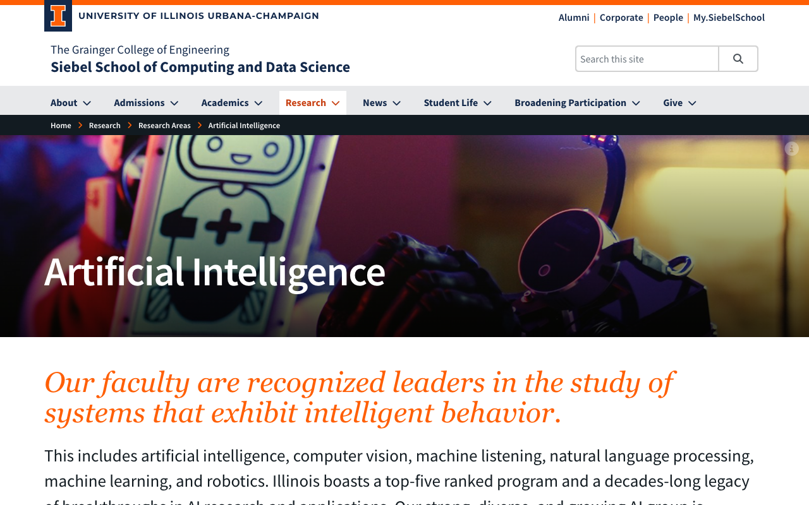
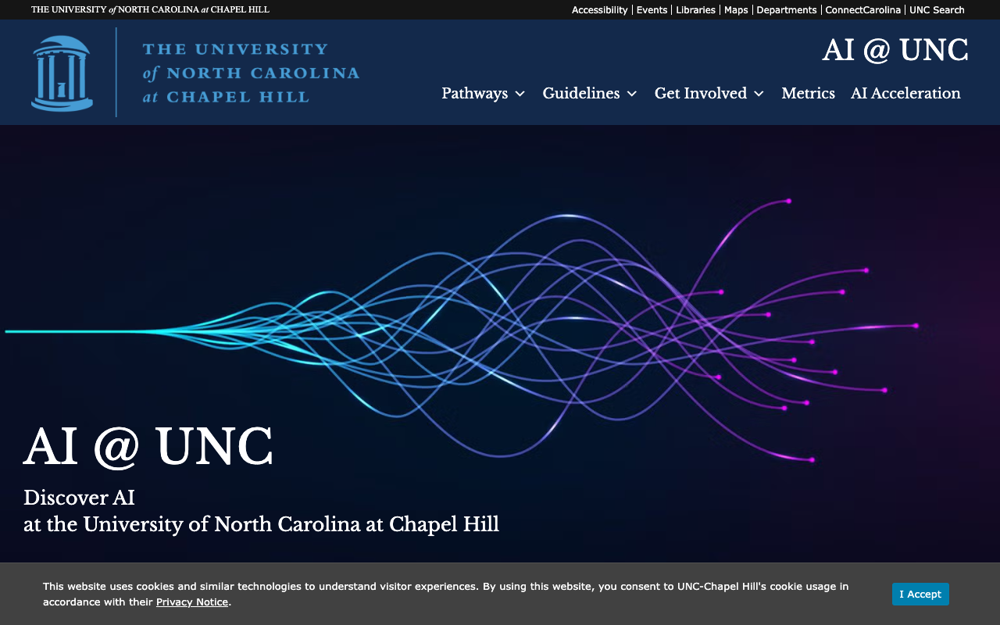
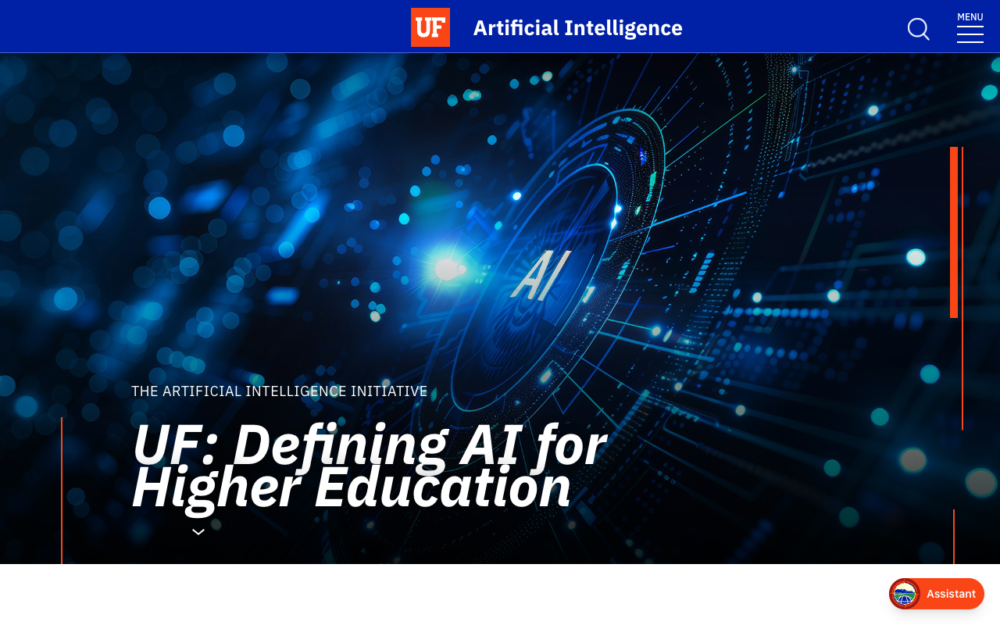
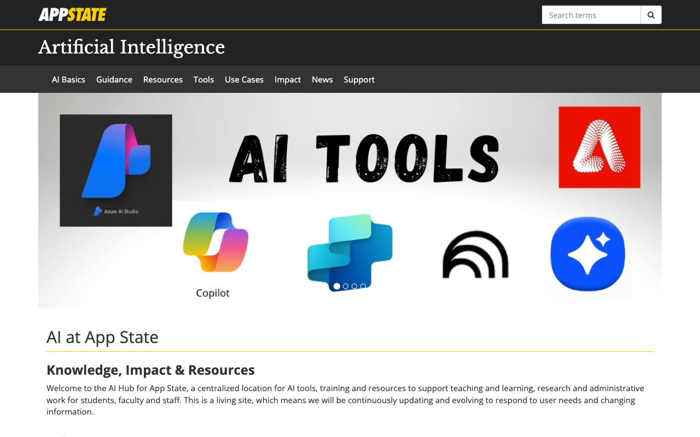
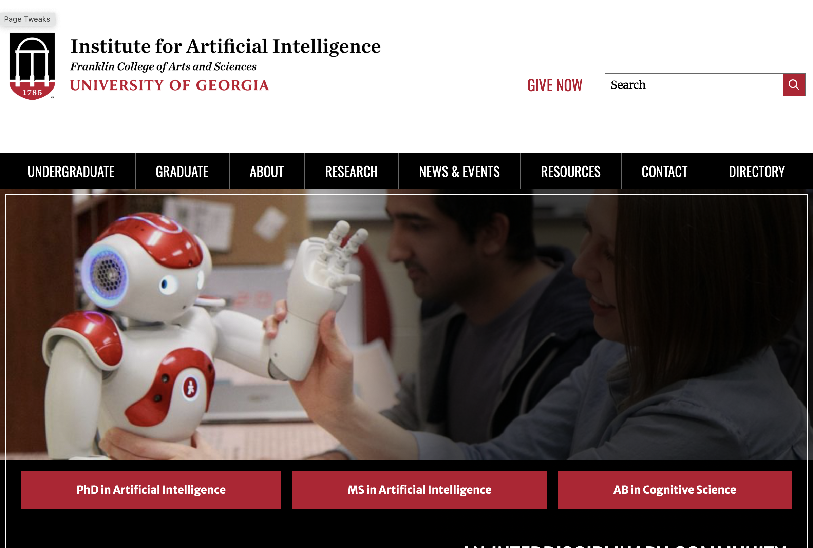

AI Website Owners/Managers with Screenshots and Focus Areas
This file lists some of the AI-related university websites grouped by their primary focus area as of June 2025.
Core Machine Learning & Deep Learning (5 sites)
| URL | Screenshot | Owner/Manager | Notes | Secondary Focus |
|---|---|---|---|---|
| ai.cmu.edu |  |
School of Computer Science, Carnegie Mellon University | Central portal for CMU's extensive and #1-ranked AI programs and research, focusing on AI that works in the real world with emphasis on societal impact. | Robotics, Health, Education, & Policy |
| ai.stanford.edu |  |
Stanford Artificial Intelligence Laboratory (SAIL), Director | Leading AI research laboratory focusing on foundational AI research across multiple domains including computer vision, NLP, robotics, and human-centered AI. | Computer Vision, NLP, Robotics, & Human-Centered AI |
| ai.utoronto.ca |  |
Provostial Advisor on AI and AI Task Force | Central portal for U of T's institutional AI strategy, guidelines, and resources. | Healthcare, Ethics, & NLP |
| ai.berkeley.edu |  |
CS188 course staff (UC Berkeley Computer Science) | Course materials site for CS188: Introduction to Artificial Intelligence, containing lecture slides, videos, homework assignments, projects, and exams. | AI Education & Course Materials |
| bair.berkeley.edu |  |
Berkeley Artificial Intelligence Research (BAIR) Lab, EECS Department. | World-renowned academic research lab focusing on foundational AI research including deep learning, computer vision, robotics, and human-AI interaction. | Deep Learning, Computer Vision, Robotics, & Human-AI Interaction |
Computer Vision & Robotics (4 sites)
| URL | Screenshot | Owner/Manager | Notes | Secondary Focus |
|---|---|---|---|---|
| ai.gatech.edu |  |
Tech AI, the AI Hub at Georgia Tech, Director | Mission-driven to translate AI research into real-world societal and industrial impact, with focus on optimization, supply chains, energy, and healthcare applications. | Optimization, Supply Chains, & Energy |
| ai.upenn.edu |  |
Penn AI (university-wide initiative) | Academic initiative with IT and communications collaboration | Robotics |
| vision.ai.illinois.edu |  |
Computer Vision and Robotics Laboratory, Coordinated Science Laboratory | Academic department with system IT and communications support | Core Vision Research |
Natural Language Processing & Data Science (6 sites)
| URL | Screenshot | Owner/Manager | Notes | Secondary Focus |
|---|---|---|---|---|
| ai.yale.edu |  |
Yale Task Force on Artificial Intelligence | Multi-departmental collaboration between academic leadership and IT services | Ethics |
| ai.illinois.edu |  | Siebel School of Computing and Data Science | Academic initiative with system IT and communications support | Core ML |
| ai.unc.edu |  | Office of the Provost | Academic initiative supported by central IT and communications teams | Health Informatics |
| ai.ufl.edu |  | Artificial Intelligence Academic Initiative (AI²) Center | Academic initiative with IT and communications support | Applications |
| ai.asu.edu |  |
AI Acceleration team, Enterprise Technology | University-wide AI initiative with technology office support | Human-AI Interaction |
| ai.osu.edu |  |
Office of Technology and Digital Innovation (OTDI) | Managed by OTDI with research community and communications support | Data Mining |
AI Applications & Interdisciplinary Focus (16 sites)
| URL | Screenshot | Owner/Manager | Notes | Secondary Focus |
|---|---|---|---|---|
| ai.cornell.edu |  |
Cornell AI Initiative, Director | Aims to integrate AI development with its impact on humans, society, and diverse applications. | Health, Sustainability, & Ethics |
| ai.duke.edu |  |
University-wide initiative led by the Provost with steering committee co-chaired by the Vice Provost for Learning Innovation, Chief Data Scientist for Duke Health, and University Librarian. | Comprehensive AI framework with four pillars: Live with AI, Trustworthy and Responsible AI, Sustainability in AI, and Advancing Discovery with AI. | Ethics, Education, & Research |
| ai.princeton.edu |  |
Princeton AI Initiative | Organized around major, well-funded initiatives like Princeton Language and Intelligence (PLI) and Princeton Precision Health (PPH). | NLP/LLMs & Healthcare |
| ai.psu.edu |  |
AI Hub, Institute for Computational and Data Sciences (ICDS) | Academic initiative with central IT and communications support | Data Science |
| ai.northwestern.edu |  |
AI@NU community initiative, Office of the Provost | A community hub showcasing interdisciplinary AI research, education, and applications across the university. | AI in Medicine & Data Science |
| ai.uta.edu |  |
President's AI Council (Chair: CIO); President's AI Task Force; Center for Artificial Intelligence and Big Data (CARIDA), College of Engineering; Information Resources | Strategic leadership by AI Council and Task Force with academic and IT collaboration | Data Science |
| ai.jhu.edu |  |
Johns Hopkins Data Science and AI Institute | Academic initiative with IT and communications collaboration | Medical AI |
| ai.usc.edu |  |
USC Viterbi School of Engineering (AI For Social Good initiative) | Academic initiative with IT and communications collaboration | Human-AI Interaction |
| ai.uic.edu |  |
UIC Artificial Intelligence Laboratory | Advisory group governance with IT and communications support | Data Science |
| usu.edu/ai |  |
Utah State University (Office of Research and Information Technology) | Academic initiative with IT and communications collaboration | Data Science & Machine Learning |
| ai.appstate.edu |  | Appalachian State University (AI Hub) | Academic initiative with IT and communications collaboration | Education |
| ai.dartmouth.edu |  |
Research Computing at Information, Technology and Consulting, and the Dartmouth Library | AI resources and support provided by Research Computing, IT Consulting, and Library services. | Cognitive Science |
| ai.uga.edu |  | Institute for Artificial Intelligence | Academic initiative with IT and communications collaboration | Cognitive Science & Interdisciplinary AI |
| ai.umbc.edu |  |
UMBC Center for AI | Academic initiative with IT and communications collaboration | Cybersecurity |
| ai.umaine.edu |  |
University of Maine AI Initiative; Information Technologies; University Communications | Academic initiative with IT and communications support | Environment |
| ai.utah.edu |  |
AI Leadership Team led by Chief AI Officer; University Information Technology (UIT) Web Support & Usability; One-U Responsible AI Initiative | Strategic leadership by Chief AI Officer with IT and academic support | Visualization |
AI Theory & Ethics (1 site)
| URL | Screenshot | Owner/Manager | Notes | Secondary Focus |
|---|---|---|---|---|
| ai.nd.edu |  |
AI Enablement Team, Office of Information Technology, University of Notre Dame; AI Innovation Council; Notre Dame Web Team | Collaboration across IT, academic, and web teams | Applications |